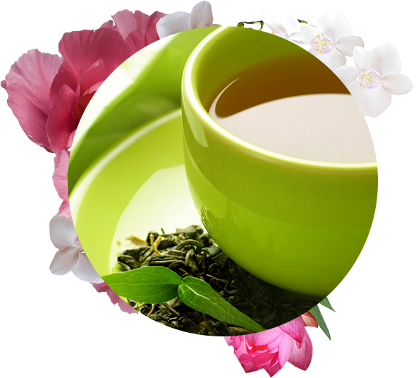
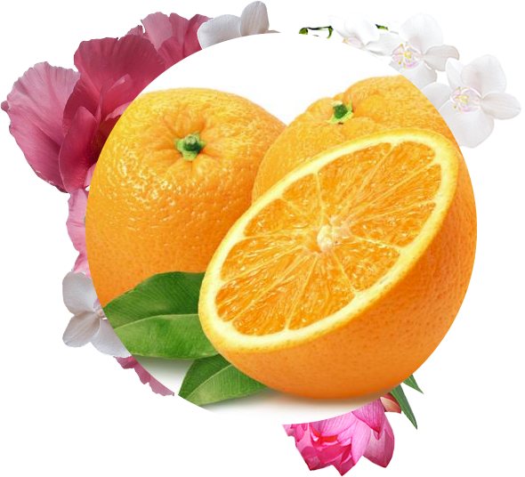
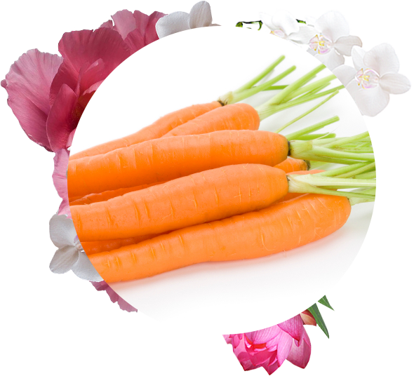
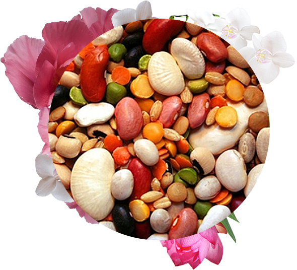
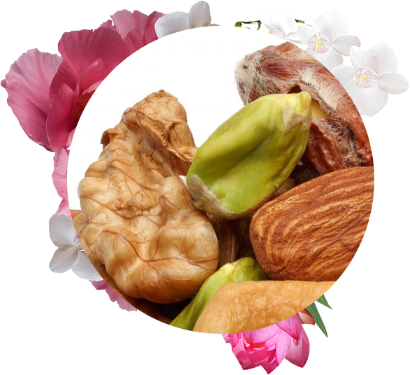
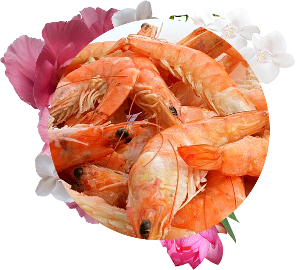

Покупать одно средство, содержащее 16 компонентов, значительно дешевле, чем все компоненты в отдельности
Безопасен
Нет несовместимости между активными веществами
Клинические исследования
В отличие от многих БАДов, биологический корректор рациона ФАМВИТАЛЬ® подтвердил свою эффективность в 2 независимых клинических исследованиях.
В исследованиях принимало участие более 50 женщин.
Эммануэль Фрин
Специалист по развитию, исследованиям и регистрации препаратов
Фамвиталь® – это действительно инновационное решение в области средств для борьбы с преждевременным старением. Это уникальный продукт с запатентованной формулой из 16 активных компонентов. «Умные капсулы» доставляют вещества с учетом суточных биоритмов женщины.
Проведенные исследования доказали, что Фамвиталь® оказывает не просто косметическое действие. Он реструктурирует дерму, делая кожу более гладкой, улучшает рост волос и ногтей, поддерживает тонус организма и улучшает иммунитет, усиливает расщепление жиров и сжигание калорий.
(Результаты были опубликованы в журнале «Advances In Natural Therapy» Jacquet A, Coolen V, Vandermander J. Effect of Dietary Supplementation With INVERSION® Femme on Slimming, Hair Loss, and Skin and Nail Parameters in Women. Advances In Natural Therapy. Volume 24 No. 5 September/October 2007)
Фамвиталь®
Французский секрет женской красоты
Результаты после 8 недель лечения
Волосы
Вдвое уменьшилась средняя интенсивность выпадения волос.
Морщины
Все параметры, характеризующие морщины (объем, глубина) – значительно уменьшились. Отмечено выраженное усиление гидратации (увлажнения) во всех точках исследования.
Ногти
70% женщин, имеющих жалобы на проблемы с ногтями (мягкие, ломкие, расслаивающиеся ногти), были удовлетворены улучшением состояния их ногтей к концу исследования.
Вес
Произошло заметное снижение среднего объема бедер, уменьшение окружности живота.
Как ФАМВИТАЛЬ® борется с преждевременным старением?
Одна из главных причин преждевременного старения – усиленное воздействие на клетки свободных радикалов. Свободные радикалы – это «осколки» молекул, в которых недостает одного электрона во внешнем электронном слое. Стабилизируясь, они окисляют другие молекулы, вызывая цепную реакцию: окислительный стресс. В результате нарушается обновление тканей и их способность к регенерации, ускоряется процесс преждевременного старения и повышается риск возникновения различных заболеваний. ФАМВИТАЛЬ® обеспечивает антиоксидантную защиту организма за счет уникальной формулы.
ФАМВИТАЛЬ® обеспечивает антиоксидантную защиту организма за счет уникальной формулы.
Дневная формула
7 активных веществ в красной капсуле
Экстракт зеленого чая
cодержит полифенолы и кофеин. Действие полифенолов многообразно:
нейтрализуют свободные радикалы, принимающие участие в процессе старения кожи, а также восстанавливают антиоксидантную активность витамина Е.
способствуют улучшению микроцикруляции крови. Адекватная микроциркуляция необходима как для доставки питательных веществ к коже, волосяным луковицам и ногтевому матриксу, так и для улучшения кровообращения в области жировых депо, что крайне важно для борьбы с целлюлитом.
полифенолы в комбинации с кофеином повышают выработку катехоламинов, естественных медиаторов термогенеза. В результате повышается расход энергии и, как следствие, усиливается сжигание жира и похудение.

Витамин C
важнейший антиоксидант, повышает антиоксидантную активность витамина Е, участвует в синтезе коллагена кожей, участвует в термогенезе.

Бета-каротин
важнейший антиоксидант, необходимый для всего организма, и в особенности кожи. Способствует защите от солнечного излучения. Предохраняет от преждевременного старения.

Цинк
входит в состав многих ферментов, особенно важен для защиты фибробластов и протеинов кожи от окислительного стресса. Усиливает синтез коллагена и рост волос.

Селен
важнейший антиоксидант, играет особую роль в защите Омега 3 жирных кислот от окисления.

Хром
в составе данных капсул отвечает за контроль массы тела, так как играет важную роль в углеводном и липидном обмене.

Масло огуречника
богато полиненасыщенными жирными кислотами Омега 6, особенно гамма-линоленовой, которая необходима для поддержания влажности клеток кожи.
Информация о биологически активных компонентах БАД и их свойствах
ФАМВИТАЛЬ® – это биологически активная добавка, содержащая тщательно отобранные компоненты, которые способствуют поддержанию здоровья кожи, волос и ногтей, а также улучшению общего самочувствия и контролю массы тела.
ФАМВИТАЛЬ® содержит два вида капсул: «Утро» и «Вечер», которые действуют в соответствии с оптимальным влиянием компонентов на организм.
Красные капсулы (День) Серебристые капсулы (Ночь)
Рекомендации по применению: Взрослым ежедневно
Утром во время завтрака – 2 красные капсулы, запивая водой.
Вечером во время ужина – 1 серебристая капсула, запивая водой.
Применять в качестве добавки к разнообразной сбалансированной диете.
Продолжительность приема: 1 месяц.
При необходимости курсы можно повторять.